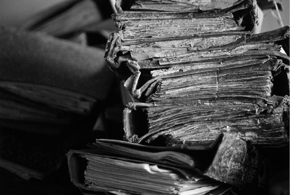

Cumhuriyet Tarihi Yazılamayacak
Cumhuriyet arşivlerinde ‘dişe dokunur’ belge yok. Belge imhası vahim boyutlarda. Darbe dönemlerinde imha edilenler bir tarafa, bir süredir kamu arşivleri üçer dörder yıllık periyotlarla sistematik olarak SEKA’ya gönderiliyor. Buradaki sorun gereksiz belgelerle birlikte ‘nitelikli’ tarihi belgelerin yani Türkiye Cumhuriyeti tarihinin hamura dönüşmesi, yok olması. Gerçek şu: “50-100 yıl sonra bugünlerin tarihi yazılamayacak”
1 Mart 2002’de çıkartılan yönetmeliğe göre devlet kademelerinde üretilmiş olan belgeler, üzerlerinden 30 yıl geçtikten sonra araştırmacılara açılacak. AB ile uyum yasaları çerçevesinde çıkartılan bir yönetmelik bu. Daha önceki yönetmeliğe göre bu süre 50 yıldı. Bazı Avrupa ülkelerinde hâlâ 50 yıl. “Ne kadar iyi... Yakın tarihe ilişkin gerçekler gün yüzüne çıkacak” diye boşuna sevinmeyin. O merak ettiğiniz, eğer tarihçiyseniz mutlaka görmek istediğiniz belgeleri görme imkânınız hiç olmayabilir. Çünkü 30 yıl sonra açıklanacağı söylenen belgeler yerinde olmayabilir! Üstelik ortada ne Selçuklular’da olduğu gibi bir Moğol saldırısı ihtimali var, ne de pek çok uluslararası güç odaklarının parmağının olduğu bir komplo... Bu, 5 yıl öncesini dahi hatırlayıp muhasebesini yapma ihtiyacı hissetmeyen Cumhuriyet neslinin sadece geçmiş asırlara değil “kendisine” dahi kayıtsız kalışının resmi...
İllüstrasyon: Osman Turhan
En büyük darbe: Kayıtsızlık
Türkiye’de her on yılda bir yaşanan darbe ve muhtıralar beraberinde pek çok önemli kurumun arşivlerinin SEKA’da ya da başka bir yerde imha edilmesine sebep oluyor. Fakat Türkiye Cumhuriyeti’nin tarihinin yazılamayacak olmasının altında yatan şey bu değil; ‘zaman aşamı’na uğrayan belgeler niteliklerine bakılmaksızın fazla yer tuttuğu için gelişigüzel imha ediliyor. Resmi dairelerde üretilen belgeler periyodik olarak bilimsel bir ayıklamaya gerek görülmeksizin SEKA’ya gönderiliyor. Yıllardır arşivler üzerinde çalışan, sunduğu tebliğlerde sık sık benzer kaygıları dile getiren Selçuk Üniversitesi Türkiyat Araştırmaları Enstitüsü Türk Tarihi Anabilim Dalı Başkanı Prof. Dr. Yusuf Küçükdağ’a göre, Cumhuriyet’e yakışır bir arşivçilik sözkonusu değil: “Bu Türkiye’nin ayıbı. Atatürk Cumhuriyet’i büyük ideallerle kuruyor fakat nedense daha sonraları Cumhuriyet’in arşivi oluşturulmuyor. Ankara’daki Cumhuriyet Arşivi’nde dişe dokunur herhangi bir belge yok. Durumu hiç iç açıcı değil. Bir an önce gerekli alt yapı oluşturulmazsa bundan 50-100 yıl sonra bu günlerin tarihi yazılamayacaktır.”

Pek çok arşiv atılmak ve imha edilmek için yasal zamanaşımı süresini bekliyor.
Ne yazık ki, Türkiye Cumhuriyeti’nin tarihinin yazılamayacağını söyleyen ilk kişi değil Yusuf Küçükdağ. Modern Türk Tarihi üzerinde çalışan tarihçilerin ve Cumhuriyet arşivi uzmanı akademisyenlerin ortak kanaati de bu. Her ne kadar mesela Selçuklu’da olduğu gibi ‘yakıp-yıkan’ bir saldırı gelmediyse de başımıza, kaynaklar açısından durum Selçuklu’dan farklı değil. Marmara Üniversitesi Yakın Çağ öğretim üyesi Prof. Dr. Vahdettin Engin, Cumhuriyet tarihi ile ilgili master ve doktora öğrencilerine konu bulmakta zorlandıklarını; çünkü ciddi bir kaynak sorunu yaşandığını söylüyor. “Bugün bile kaynaklara ulaşmak mümkün değil. Tarihe nitelikli belge bırakılmıyor. Bu ciddi devlet anlayışına ters düşüyor” diyor. Engin’e göre de Türkiye Cumhuriyeti’nin halihazırdaki arşiv durumu tarih yazımını mümkün kılmayacak ölçüde tahrip olmuş durumda.
60 yıl girişim yapılmadı
Peki neden böyle oldu? Önemli bir devlet geleneğini devralan, bu geleneği fiilen devam ettirmekte olan Türkiye Cumhuriyeti nasıl oluyor da kendi tarihini yok ediyor? Cumhuriyet arşivleri üzerine çalışan Marmara Üniversitesi öğretim üyesi Doç. Dr. Oğuz İcimsoy Cumhuriyet arşivi için 60 yıla yakın bir süre hiçbir girişimin yapılmadığını söylüyor. İki üç defa, “muhafazasına lüzum kalmayan evrak ve vesaitin imhasına” dair nizamname çıkartılıyor. İlki 1934 tarihli, üç sayfalık nizamname, devlet dairelerinin elinde bulunan ve on yaşını aşmış belgelerin imha edilmesini öngörüyor. O dönemde imha şeklini açıklamadığından nizamnameyle ilgili olarak taşra ve merkez arasında yapılan yazışmalarda “imhanın nasıl olacağı” tartışılıyor. Sonunda gizliliği olan ama güncelliğini yitiren belgelerin kıyılarak kağıt tüccarlarına satılmasına karar veriliyor. Daha SEKA kurulmamıştır. Nizamnamenin, 1937’de çeşitli açıkları çıkıyor, nelerin ayıklanarak imha edileceğine dair kesin kıstaslar konulmadığı için yöneticiden yöneticiye değişen spekülatif bir hal alıyor. Dolayısıyla uygulama 1939’da durduruluyor. 19 yıl sonra 1956’da yeni bir imha kanunu, 1957’de de ‘uygulama’ yönetmeliği çıkarılıyor. Yönetmelik o kadar zor bir uygulamayı beraberinde getiriyor ki, ayıklama uygulamasını neredeyse imkansız hale getiriyor. Türkiye ve Ortadoğu Amme İdaresi’nde öğretim üyesi olan ve Türkiye’nin arşiv sorunları üzerine çalışan Fikret Ar, 1956 mevzuatının dört komisyonlu imha sistemiyle sadece bir ilçenin bir yıllık arşivinin öngörülen süreçte 40 yılda imha edilebileceğini ortaya koyuyor. Zaten, Maliye Bakanlığı ödenek ayırmadığı için 1959’da uygulaması durduruluyor yönetmeliğin.
Fotoğraflar: Turgut Engin
İmha raporları da imha edilmiş
Oğuz İcimsoy, Cumhuriyet Arşivi’nin tarihçesini anlatırken bir şeyi belirtmeden geçemiyor. “İşin ilginç yanı bu dönemlerde (1934-37,1956-59) kaç komisyonun, ne kadar belgenin imhasına karar verdiğini bilemiyoruz. Çünkü bu kayıtlar da kalmamış. Bir şekilde yok olmuş.”
Bir taraftan mahzenler ağzına kadar dolmuştur. Bir şekilde işe yaramayacak belgelerin tasfiye edilmesi gerekiyor. Belge imha edilmesin demek de mümkün değildir. 59’dan 80’li yıllara gelinceye kadar 17 tane kurum (bakanlık ve genel müdürlük) Meclis’ten özel yetki alarak kendi belgelerini imha yoluna gidiyor. 80 sonrasının SEKA’lı günlerine gelmeden önce imhanın boyutları neydi? İcimsoy’a göre yönetmeliğin uygulanmadığı bu boşluk dönemlerinde de bir şekilde imhalar gerçekleştiriliyor. 1966’da Türk Kültür dergisinde çıkan bir makalede Milli Eğitim Bakanlığında görevli bir kişinin ağzından bakanlığın taşra teşkilatındaki belge imhasının çok vahim boyutlara ulaştığı anlatılıyor. Bu dönemde sözkonusu yönetmelik yürürlükte olmamasına rağmen özellikle 5-6 yıl içerisinde dolan taşra binalarının arşiv depolarında yeni belgelere yer açılması için eski belgelerin tasfiye edilmesi gerekmektedir. Öyle de olur. Tabii bu bir yere nakil değil, doğrudan doğruya oradaki kağıt hurdacısına vermek ya da yakarak imha etmek şeklinde oluyor. Günübirlik faydacı bir anlayış gözetilerek masum bir “yer açma faaliyeti”dir yapılan....
SEKA’lı yıllar
80’li yıllar, SEKA’lı yıllardır... “Siz imha edeceğiniz kağıtları söyleyin biz kamyon gönderelim..” Televizyonlarda yayınlanan reklam sloganı budur. CHP’nin önemli bir arşivi bu dönemde SEKA’ya gidiyor. Tek parti döneminin grup toplantıları arşivi yok artık. Kanunlarla ilgili bütün konuşmaların, tartışmaların CHP grubunda gerçekleştiğini, TBMM’de sadece parmakların inip kalktığını düşündüğünüzde durum daha iyi anlaşılıyor. Pek çok kamu ve kamu yararına çalışan kurumun arşivleri SEKA’da yaşanan hammadde krizi sonucu bu kuruma yönlendiriliyor. Merkez ve taşra kamu kuruluşlarının depoları büyük ölçüde bu dönemde havalanıyor. Prof. Dr. Yusuf Küçükdağ, yerel yönetimlerle ilgili bir çalışması sonrasında şu sonuca varıyor: “Öyle anlaşılıyor ki 19. yüzyıldan itibaren vilayetlerde meydana gelen köklü değişiklikler sonucu eski kayıtlar, yeni yöneticilerin ilgi alanına girmediği için bilinçsizce imha edilmiş, son dönemlere kadar gelenlerse, hiçbir uzman görüşü alınmadan SEKA’ya gönderilmiştir... Sonuç olarak denilebilir ki, mahalli idarelerin depolarında Cumhuriyet dönemine ait olup 1990’lı yıllardan önceye giden evrak ya hiç yok, ya da çok az sayıdadır. Çünkü kurumlar, depolarındaki arşiv malzemesini yer darlığı veya kuruma para elde etme bahanesiyle kamyonlara doldurup SEKA’ya göndermişlerdir.” Küçükdağ, merkez arşivlerinin taşra arşivlerinden farklı olmadığını ifade ederek, “Şu anda bildiğim kadarıyla resmi dairelerin arşivleri her üç-dört yılda bir SEKA’ya gönderiliyor. Bu bir an önce engellenmelidir” uyarısını yapıyor.
Vilayet arşivleri boşaltılıyor
Prof. Dr. Yusuf Küçükdağ, bizzat yaşadığı bir olayı naklediyor: “1992’de Konya ile ilgili bir araştırmanın belgelerini bulma ümidi ile gittiğim Vilayet Arşivi’nde, liseden sınıf arkadaşım olan ve şu anda emekli bir yetkili, arşivde eskiye ait belgenin bulunmadığını, çünkü 1987’de 76 kamyon evrakı SEKA’ya gönderdiklerini, hatta parasını ‘harcaya harcaya bitiremediklerini’ övüne övüne anlatmıştı.” Taşra, kamyonlar dolusu evrakın SEKA’ya gönderilmesi hikayelerinden geçilmiyor. Birçok bakanlıkta özel izinle araştırma yapan Prof. Dr. Vahdettin Engin, araştırma yaptığı birkaç bakanlıkta hâlâ var olan arşivlerin de çürümeye terk edilmiş olduğunu gözlemlemiş. Tünel’le ilgili bir çalışma yaptığı sırada Osmanlıca ve Fransızca pek çok değerli belgenin İETT arşiviyle beraber 1982 yılında SEKA’ya gönderildiğini öğrenen Engin, bu yapılanları akılla mantıkla bağdaştıramadığını söylüyor. Bir dönem TBMM Başkanlığı yapan Demokrat Parti geleneğinin önemli isimlerinden Hüsamettin Cindoruk, 12 Eylül sonrasında sadece CHP grup toplantısı arşivlerinin değil, 20 yıllık siyasi geleneğe sahip Adalet Partisi evraklarının da SEKA’ya gönderildiğini ifade ediyor. Cindoruk TBMM Başkanı olduğu dönemde Meclis’teki arşivlerin daha iyi korunması için müstakil bir bina projesi hazırlattığını; fakat bütçe problemi yüzünden bunu gerçekleştiremediğini ifade ediyor.
Prof. Dr. Yusuf Küçükdağ, “50-100 yıl sonra bugünlerin tarihi yazılamayacak” diyor. Ona göre vilayet arşivlerinde 90 öncesine gitmek mümkün değil. Merkez arşivler taşradan farksız
Özel arşiviyle bilinen tarih araştırmacısı Orhan Koloğlu, Basın Yayın Genel Müdürü olduğu dönemde yaşadığı bir anısını anlatıyor. “Basın Yayın Genel Müdürlüğünün, Cumhuriyet’in 50’lere kadar gelen döneminde çok önemli bir fonksiyonu var. Milli Mücadele’den itibaren bütün demeçlerin, resmi açıklamaların kaynağı orası. Yönetici olduğum sırada merak ettim arşivde ne var ne yok diye. Öğrendim ki maalesef bina değişimi sırasında bütün arşiv SEKA’ya gönderilmiş.” Anlatılanlara göre belge imhaları sırasında evrakların içinde Osmanlıca ile yazılmış eski tarihli belgeler hakkında ‘Acaba bu değerli bir şey midir?’ şeklinde bir tereddüte düşülebiliyor ama Latin harflerle yazılan Cumhuriyet dönemine ait belgelerin ‘değerli’ olabileceği hiçbir zaman düşünülmüyor...
Evren: SEKA’ya mı göndersem acaba!
12 Eylül döneminde fiilen Başbakanlık Müsteşarlığı yapan Hasan Celal Güzel, Çankaya Köşkü arşivleriyle ilgili Kenan Evren’le arasında geçen diyaloğu “Bunu ilk defa anlatıyorum” diyerek bize aktardı. Bir karşılaşmalarında Kenan Evren, Hasan Celal Güzel’e arşivlerle ilgili yaptığı çalışmaları takdir ettiğini söyleyerek Çankaya Köşkü’ndeki çok değerli arşivlerin varlığından bahis açar. Hasan Celal Güzel çok heyecanlanır, bunun çok önemli olduğunu söyler. Evren’in bazı çekinceleri vardır, “Yanındakiler Atatürk’ün her şeyini, tuvalete dahi gittiğini yazmışlar yav!” der. Hasan Celal Güzel bunun önemli olmadığını, Atatürk’ü yakından tanımak için çok iyi bir fırsat ve tarihe kalacak önemli belgeler olduğunu ifade eder. Kenan Evren tereddüt geçirir “Yanına kim misafir gelmiş, kiminle içki masasında oturmuş, kiminle konuşmuş hepsi var. Seveni var sevmeyeni var. Atatürk bunu da mı yapmış diyecekler şimdi.” diyerek kaygısını dile getirir. Hasan Celal Güzel, Atatürk’ün de bir insan olduğunu, bunun yanlış anlaşılmayacağını söylese de Evren’i ikna edemez. “Ben biraz daha düşüneyim. Bunun istismar edileceğini düşünüyorum. Belki de gönderirim gider SEKA’ya” cevabını alır. Hasan Celal Güzel ise daha sonra bu değerli evrakların akıbetini öğrenemediğini söylüyor.
İmha teşvik ediliyor
“İstanbul Büyükşehir Belediyesi’nden il sağlık müdürlüklerine, herhangi bir vilayetten Ankara’da bilmem ne bakanlığına kadar hiçbir ayrım gözetmeksizin 1956 kanunu yürürlükte olmakla birlikte bu kanun yok sayılarak bilinçsiz bir şekilde imha teşvik edildi.” diyor Doç. Dr. Oğuz İcimsoy. Tabii sadece SEKA değil, zaman zaman kasıtlı ya da kasıtsız çıkan yangınlar, su baskınları, kanalizasyon patlamaları, yani ‘doğal felaketler’ ilk olarak binaların en izbe noktalarındaki arşivlere isabet ediyor. İcimsoy’un naklettiğine göre iki ay önce bir soru üzerine açıklama yapan Adalet Bakanı, 1950’lere kadar olan Adalet Bakanlığı arşivinin bir su baskını sonucu yok olduğunu ifade ediyor. Geçen yıl Sayıştay arşivini küle çeviren yangını hâlâ çok taze bir bilgi olarak hatırlıyoruz. İcimsoy, Erzincan örneğinden hareketle büyük depremlerle yıkılan kamu binalarıyla birlikte arşivlerin de yok olduğunu söylüyor.
Çoğunlukla bodrum katlarında tutulan arşivler bazen su baskınlarına ve yangınlara maruz kalıyor. Eğer zamanaşımı söz konusu ise bu zaten sorun teşkil etmiyor!
1976’da kurulmasına rağmen ödenek ve personel yetersizliği nedeniyle kayda değer bir çalışma yapamayan Devlet Arşivleri Genel Müdürlüğü, 1988’de İsmet Binark’ın genel müdür olduğu dönemde Özal hükümetinin desteğiyle mevzuat değişikliğine gidiyor, Ankara ve İstanbul’da hem bina hem de personel tahsisiyle Osmanlı ve Cumhuriyet arşivleri konusunda kayda değer en önemli arşivcilik çalışmasını yapıyor. O günden bugüne Osmanlı arşivleri yüzde 15 tasnif edildi. Bu bile önemli ve değerli görülüyor. Fakat konuştuğumuz akademisyen ve araştırmacılar Prof. Dr. Yusuf Küçükdağ’ın söylediği gibi Cumhuriyet arşivinde hâlâ “dişe dokunur” bir belgenin yer almadığı kanaatindeler. Yani pek çok bakanlık Cumhuriyet Arşivleri Daire Başkanlığı’na belge vermemekte, ya da anlatılanlara göre öyle bir belgeyi mahzenlerinde taşımamakta.
İşi biten belge SEKA’ya gider
59-88 arasında ‘uygalanmayan’ imha yönetmeliğine rağmen imha edilen belgelerin boyutu ortada. İcimsoy’a göre 88’de çıkartılan mevzuatla kamu kesiminde üretilen belgelerin imhası kolaylaştırıldı. “Bir dönem dört aşamalı onay mekanizması varken yeni mevzuat ayıklama ve imha sürecinin kurumlar bazında kalmasını öngörüyor. Yeni duruma göre, kurum içinde ayıklama ve imha komisyonları kuruluyor, bu komisyonlar birimlerin belgelerini değerlendiriyor. Ve ayıklamaya değer buldukları ayrılıp, listeler hazırlanarak kurumun en üst yöneticisi tarafından onaylanmasıyla imha ediliyor. Tabii orada tek taraflı bir yaklaşım söz konusu. Kurum içinde siz belgelere idari açıdan bakıyorsunuz. Bir belge ile idari olarak işiniz bitmiş, o belge güncelliğini yitirmiş olabilir ama bir de işin öbür tarafı var. Türkiye Cumhuriyeti’nin tarihi tarafı...”
Oğuz İcimsoy arşivciliğin temelinde işe yaramayan belgelerin ayıklanmasının yattığını hatırlatıyor: “Arşivcilik belgeyi imha etme sanatıdır.” Üretilen belgelerin bir bölümü nitelikli bulunarak saklanmakla birlikte bir bölümü imha edilecektir. Batılı ülkelerde, imha edilen belge oranları ülkeden ülkeye değişiyor. Bazılarında yüzde 50, bazılarında yüzde 75, İngiltere örneğinde olduğu gibi yüzde 98. İngiltere’de alıkonulan nitelikli arşiv oranı yüzde 2. Yani kamuda üretilen belgelerin tümünü saklamak mümkün değil. Fakat hiçbir ülkede Türkiye’de olduğu gibi herhangi bir ayıklama yapılmadan balyalar halinde belgeler hamur yapılmak için geri dönüşüm süreçlerine gönderilmiyor. Devlet Arşivleri Genel Müdürlüğü Cumhuriyet Arşivleri sadece kendisine ulaşan çok az belgeyi ‘yönetebiliyor’. Batılı ülkelerde olduğu gibi kamu kurumlarının arşiv politikasına yön veremiyor.
Kamu’da ‘arşivci’ yok
Kanuni saklama süreleri içinde belgeyi elinin altında bulunduran, “zaman aşımı” sonrasında SEKA’ya göndermekte tereddüt etmeyen kamu yöneticisinin problemlerinden biri de hiçbir kamu kurumunda ‘arşivci’ kadrosunun olmaması. Yani neyin değerli neyin gereksiz olduğuna karar verecek arşiv formasyonu almış uzman kişiler yok kamu kurumlarında. Kamu’da arşiv servisleri kuruluşun en problemli kişilerine yataklık eden bir sürgün yeri olarak algılanıyor. “Belgenin değerli olup olmadığı, mutlaka arşivciler tarafından saptanmalı. Şimdiye kadar gerek merkez gerekse taşra arşivlerinde gördüğüm kadarıyla ilkokul mezunu ve arşivcilikle, Türk kültürüyle ilgisi olmayan yardımcı hizmetler sınıfından insanlar kullanılmakta. Nitekim çok sayıda ipi çözülmedik evrak balyası kamyonlarla SEKA’ya gönderilmekte” diyor Prof. Dr. Yusuf Küçükdağ. Şu anda üniversitede öğretim üyesi olan bir akademisyen arkadaşı Prof. Dr. Yusuf Küçükdağ’a bizzat kendisinin yaşadığı bir olayı üzülerek anlatmış: “İçişleri Bakanlığı’nda çalıştığı dönemde kendisine arşivdeki belgeleri ayıklayarak işe yaramayanları SEKA’ya gönderme görevi veriliyor. O da bir sürü dolapta bir sürü kağıtla karşılaşınca işin içinden çıkılamayacağını düşünerek hepsini SEKA’ya gönderiyor.” Bu kişinin ‘arşivci’liğin yanında yüksek eğitimli bir kişi olduğunu da hatırlatalım. Küçükdağ, bir an önce var olan evrakların da yok olmaması için 1. Milli Arşiv Şûrası’nda alınan kararların uygulamaya geçirilmesi gerektiğini söylüyor. “Bugün 4 yıllık arşiv mezunları istihdam edilmedikleri için bu bölümler kapanmanın eşiğindedir. Hükümet üniversitelerle işbirliği yaparak iki yıllık arşivcilik yüksek okulu açmalı, resmi dairlerin günlük evrakını ve geçmiş evraklarını tasnif edecek ve arşivleyecek yeterlilikte elemanlar yetiştirmeli.”

Eski yazı (Arapça) olanları değerli görülürken ve korunmaya alınırken, Latince yazılan yeni Cumhuriyet evrakı aynı ilgiye mazhar olmuyor ve değerli olup olmadığına bakılmaksızın atılıyor.
Cumhuriyet’te neler oluyor?
Alınan kararlarla ilgili fiili olarak bir adım atılmamış bile olsa 1998’de yapılan 1. Milli Arşiv Şûrası önemli. Kayıt altına alındıkları için şûradaki tebliğ ve tartışmaların tümünü okumak mümkün. Toplantıda büyük ölçüde Osmanlı arşivi tartışılmakla birlikte sık sık Cumhuriyet arşivinin durumunun çok kötü olduğu hatırlatılıyor, ‘iş işten geçmeden’ bir şeyler yapılması gerektiği vurgulanıyor. Ünlü tarihçi Prof. Dr. Ercüment Kuran onlardan birisi. “Duyduğuma göre, bundan bir müddet önce Cumhuriyet devlet arşivlerinin bazıları, işe yaramaz diye tasfiye edilmiş ve yakılmış. Bunun büyük bir yanlış olduğu kanaatindeyim. Çünkü, Cumhuriyet dönemi hadiselerini anlamak için bu malzeme ana kaynak arşivleri olarak kullanılacaktır.”
Arşivlerin gelişigüzel imhası arşive dayalı Cumhuriyet tarihi yazımını imkânsız kılıyor.
1998 yılında Devlet Arşivleri Genel Müdürü İsa Özkul, şûranın kapanış konuşmasında “75. yılını kutladığımız Cumhuriyetimizin kurum ve kuruluşlarının ürettiği milyonlarca belge birçok yerde harap oluyor ve bu şekilde giderse 15-20 sene sonra Cumhuriyet dönemi arşivleri içinden çıkılamaz hale gelecek ” diyor. Sakarya Üniversitesi’nden toplantıya katılan Prof. Dr. Atilla Çetin, Sakarya ve Kocaeli bölgesinin tarihini yazmak istediklerini fakat belge niteliğinde bir şey bulamadıklarını söylüyor. “Ancak Osmanlı Arşivleri’ne giderseniz vilayetlerle ilgili bir şeyler bulabilirsiniz” diyor.
Dışişleri bile...
Peki belgeleri muhafaza edilen arşivler yok mudur? Örnek olarak Atase (askeri arşiv), tapu kadastro ve Dışişleri Bakanlığı arşivleri gösteriliyor. Bir zamanlar başbakanlık müsteşarlığı yaptığı dönemde Türkiye’nin arşivleri konusuyla yakından ilgilenen, o dönemde pek çok askerle birlikte ‘tehcir’ belgeleri üzerine çalışan Hasan Celal Güzel, Atase Arşivleri’nin sadece asker kökenlilere ve az sayıda sivile açılmasını doğru bulmuyor. Bu bir ortak kanaat. Dışişleri Bakanlığı’nda özel izinle araştırma yapan Prof. Dr. Vahdettin Engin, Dışişleri Arşivi’nin nisbeten korunduğunu söylüyor. Ancak Dışişleri Arşivi konusunda farklı düşünenler de var. 1. Milli Şûra’da “Dışişleri Arşivi” başlıklı tebliğini sunan Prof. Dr. İlber Ortaylı, “Her devletin değil, imparatorlukların ve büyük devletlerin Dışişleri arşivi olur; Osmanlı Devleti’nin Hariciye Arşivi vardı ve vardır, ancak bakanlık senelerce bunu tasnif etmeden perişan şekilde elinde tutmuş, arşivcilere teslim etmemiştir. Bugün aynı problem Cumhuriyet dönemi arşivi açısından da söz konusudur” diyor. Prof. Dr. Azmi Süslü ise daha keskin konuşuyor: “Dışişleri Arşivi iyi deniliyor. İdari arşiv için değil, bilimsel arşiv için söylüyorum. Oysa en berbat arşiv Dışişleri Arşivi’dir ve en kapalı arşiv de Dişişleri Arşivi’dir.” En sağlam denilen Dışişleri Arşivi için bile görüldüğü gibi çok farklı görüşler var. Oğuz İcimsoy, yakın tarihte Yunanistan’la aramızda yaşanan Kardak krizini hatırlatıyor. “Kardak kayalıklarının kime ait olduğu tartışmaları söz konusuydu. Ve bununla ilgili muhtemelen bir anlaşma yapılmış olmalıydı. Bizim Dışişleri Bakanlığımızın görüşü bu noktadaydı. Bu anlaşmayla ilgili görüşmelerle ilgili belgelerin nerede olduğu konusunda kesin saptama gerçekleştirilemedi. Yani nokta atışı yapamadık. Arandı arandı bulunamadı. Neyse ki gündem değişti, biz Kardak krizini unuttuk.”
Keyfi olarak belge imha edilebilir
Tarih yazımı için gerekli olan belgelerin bir kısmının imha edildiği ortada, peki ya geride kalanlar? Onlar da çürümeye terk edilmiş ya da araştırmaya açık değil. Hasan Celal Güzel, TBMM’de belli döneme ait zabıtların açılmadığını hatırlatıyor: “Cumhuriyet’in ilk dönemine ait zabıtların tahrip ve tahrif edildiği iddiaları var.” Hâlâ bazı kamu kurumlarının depolarında saklanıp da açılmayan arşivler bugüne kadar çürümemiş, herhangi bir kanalizasyon patlaması ya da yangınla zayi olmamışsa bile bundan sonrası için başına bir iş gelmeyeceğine dair garanti yok. 20-30 yıl öncesine ait değerli belgeleri keyfi olarak imha etmenin herhangi bir yaptırımı yok. İcimsoy’un anlatımıyla “İleride sizi olumsuz gösterecek bazı belgeleri sistemi hiç zorlamadan yok etmeniz mümkün. İşte belli bir dönemde su basmıştı derseniz, bundan yirmi yıl sonra ne siz su bastığını ne de öbürleri su basmadığını ispatlayabilir.” İcimsoy, AB sürecinin ön koşullarından biri olarak sunulan şeffaflaşmanın da iyi oluşturulan, iyi tutulan bir kayıt sistemini şart kıldığını söylüyor: “Eğer siz belgeleri istendiğinde halkınıza sunamıyorsanız şeffaf olduğunuzu iddia edemezsiniz. Devlet kademesindeki yöneticiler dahi birçok belgeye ulaşamıyorlar.”
Sadece kamuya özgü değil
Orhan Koloğlu, tarih yazımı için vazgeçilmez kaynak olan arşive bigane kalan yaklaşımın sadece kamu kurumlarında olmadığını söylüyor. “1956’da Akşam Gazetesi yeni patronuna geçti. Yeni yönetim, çok iyi hatırlıyorum, 1919’dan beri kalan çok değerli arşivini fazla yer tutuyor diyerek tasfiye etti. Orada öyle resimler vardı ki müthiş bir arşivdi.” Orhan Koloğlu kendi arşivini İzmir’de Sabri Yetkin’in önderliğinde kurulmakta olan kent arşivine vermiş. Beyoğlu’nda üç sahaf dükkanı işleten Ergun Hiçyılmaz, devletin bir milletin hafızası sayılan bu cins tarihi belgelere ve arşivlere iltifat etmediğini söylüyor. “Öyle belgeler var ki ben bunu satamam; devletimiz de almak için bir girişimde bulunamıyor. Bu gidişle bunları yakacağım galiba.” diyor. Ayrıca şunu da belirtelim; yılların emeğiyle meydana getirdiği arşivini kamudaki SEKA’ya gönderme huyundan dolayı devlet üniversiteleri dahil herhangi bir kamu kuruluşuna vermek istemeyen pek çok koleksiyoner var. Onlardan “Bunlar SEKA’dan kurtardıklarım.” sözünü işitiyoruz sık sık. Ayrıca “SEKA’dan kurtulanlar” artık bir deyim olmak üzere.
Sadece SEKA’ya gitmiyor
İzmit SEKA’dan aldığımız bilgiye göre SEKA hammadde ihtiyacının yüzde 50’sini atık kağıtlardan sağlıyor. Atık kağıtların yarısını da kamudan gelen evraklar oluşturuyor. 2001 itibariyle son beş yılda kamudan gelen kağıtların ortalama miktarı ton cinsinden sırayla şöyle; 37.400, 25.440, 20.410, 37.115 ve 20.100. Fakat kamu kurumları kağıtları SEKA’ya vermek zorunda değiller, kağıt sektöründen herhangi bir şirkete satabiliyorlar ve satıyorlar. Dolayısıyla bugün kamu kurumlarından kağıt sektörüne satılan toplam arşiv miktarını öğrenmek çok zor.
Sözlü kültüre geri mi dönüyoruz?
Belgesiz iş yapma, eğer belge varsa belgeyi yok etme huyu İttihat ve Terakki’yle beraber devraldığımız bir davranış modeli ve devlet geleneğinin bize verdiği en faydalı özelliği yok ediyor. Kamuda yapılan bütün işlerin belgeli olduğu göz önüne getirildiğinde tarihi gerçeklerin ortaya çıkmasını istemeyen kişilerin tek yapacakları iş olarak ‘belgelerin’ imhası kalıyor. Belediye seçimleri öncesinde seçimi kaybetmek üzere olan tarafın yaz-kış demeden kaloriferlerinin gece vardiyasında tam mesai çalıştıkları Türkiye’nin bilinen gerçekleri. Hasan Celal Güzel, “Devlet iyi yapar kötü yapar bunu gizlemenin, yok etmenin anlamı yok.” diyor. Kötü bir şey yapılmışsa belgelerin imhasının bu yanlışlığı örtmeyeceğini, her yapılanı bir şekilde yayan sözlü kültür diye bir olgunun olduğunu söylüyor.
Burada ilgili kuruluştan bir muhatap bulup da doğrulatamadığımız pek çok bilgi olduğunu da kaydedelim. Devlet Tiyatroları Arşivi’nin 1994 yılında Amerika’daki bir üniversite adına Betty Sally adında bir bayana satıldığı bilgisi bunlardan birisi.
Çok önemli belgelerin göz kırpmadan SEKA’ya gönderildiği bir ülke kendi tarihini göz göre göre yok ediyor nitekim.
Bir Kamu Belgesinin “Kısa” Öyküsü
Bir süredir ciğerlerinden rahatsızdı, kesik kesik öksürüyordu. Karanlık üzerine çökmüş, toz toprak içinde çaresizce bakınıyordu etrafına. Yıl boyu gecenin yaşandığı eşi bulanmaz bir uzlet diyarındaydı sanki. ‘Yüzün ne kadar da sararmış” diye başlıyordu hasbihaller. Büsbütün canı sıkılıyordu. Halbuki bu karanlık, havasız, rutubetli mahzene ilk girdiğinde zaman zaman gün ışığını görüyor, kapı açıldıkça temiz hava ciğerlerine doluyordu. Sık sık kapının açılması onun için iyi olmadı; her açıldığında biraz daha itelendi, her açıldığında biraz daha ‘yaşlı’ ve güçsüz hissetti kendini. O terutaze, iktidar günlerini hatırlamasa çoktan koyvermişti kendini. Işıl ışıl parlarken, ne de güçlüydü. Nice nice genel müdürler önünde düğme ilikler, saygıda kusur etmezlerdi. Özenle bakılır, her an bir ‘rahatsızlığı’ var mı bakışlarıyla karşılaşır, bir dediği iki edilmezdi. Hey gidi günler hey! Şöyle kalkabilseydi de gösterebilseydi kendisini... Şu belini sıkan ip de olmasa kaçıp giderdi buralardan...
Bir süre sonra karanlığın, toz toprağın kaderi olmadığını anlamıştı. Kendinden önce buraya girenler sırasını kovmuş, gitmişlerdi. Pek inanmamıştı ama bir ‘reenkarnasyon’ hikayesidir gidiyordu. Gidenler başka şekillerde geri geliyor deniliyordu. Kendine iyi bakmalı, ‘çürüğe’ çıkmamalıydı. Çürüklerin akıbetini biliyordu, onlar işe yaramaz birer mahluktular, yerleri de çöplüktü.
O gün gelip çattı. Özensizce bir ‘tır’ın arkasına bindirilerek götürüldüler. Bu yolculuğu hep merak etmişti. Yapılan konuşmalara kulak kesilmişti. “Abi bunlar önemli olabilir ha! Baksana başbakan falan yazıyor. Yüzünü göremediği hafif şiveyle konuşan diğer adamın sesini duymuştu. “Boşver oğlum, hani ne derler ‘tarihi geçmiş! Ha ha ha...” Çok ağrına gitmişti. Kentin dışında bir fabrikanın önündeydiler artık. Heceleyerek okudu “SEKA”. Derisinin yüzüldüğünü hissetti birden...
Aksiyon, 393. sayı